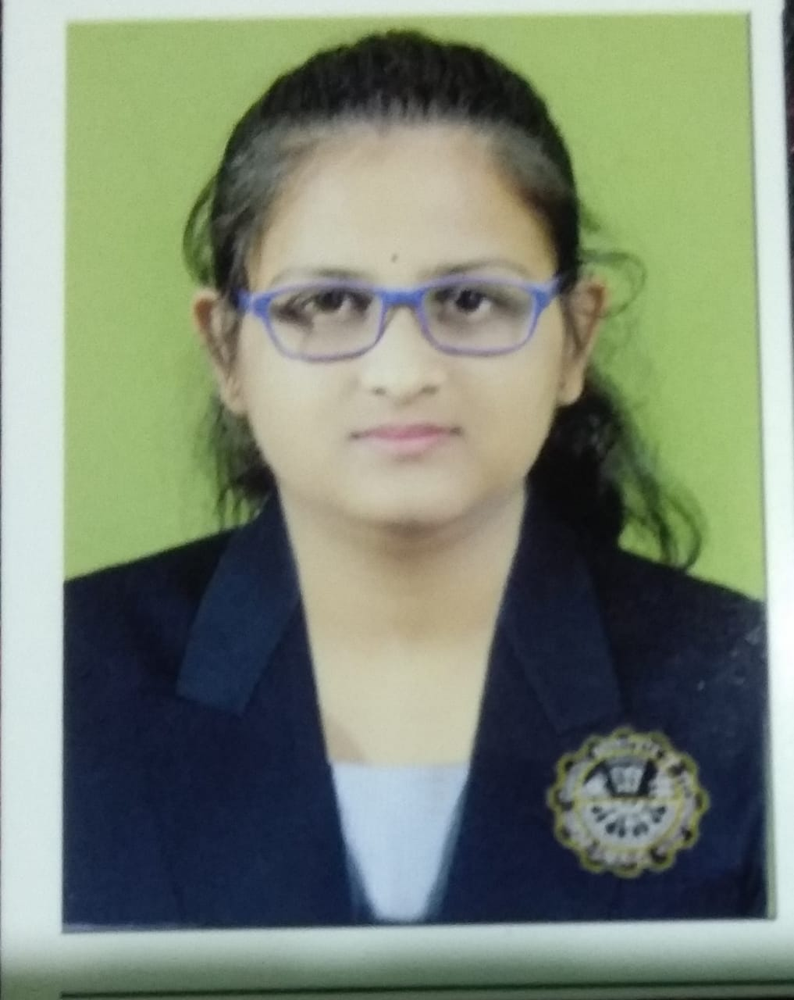

Web developer
aparna kumari nayak
language skills:odia,hindi,english
profession:student
mail id
mobile no
hobbies:cooking,rongoli,listening music
I am a hard-working and driven individual who isn't afraid to face a challenge. I'm passionate about my work and I know how to get the job done. I would describe myself as an open and honest person who doesn't believe in misleading other people and tries to be fair in everything I do.
Town Planning involves both control of existing and new development, and "strategic planning" to ensure our resources are carefully managed to match our future needs and expectations. Planning is a dynamic process that is constantly evolving in response to changes within the community.
I'm known for being a detail-oriented, well-organized team player. I never miss deadlines, I'm a good communicator and I can juggle multiple tasks at once. In my performance reviews, my supervisor always notes that he appreciates my professionalism and enthusiasm for the jobTown Planners develop strategies and design the communities in which we live, work and play. Balancing the built and natural environment, community needs, cultural significance, and economic sustainability, planners aim to improve our quality of life and create vibrant communities
github
linkedin